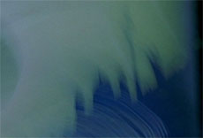

|
DER TAG (The Day)
Uli M. Schueppel | D 2008 | 84 Min.
Material: DV
Format: BetaSP
Originalsprache: Deutsch
Buch: Uli M. Schueppel
Kamera: Cornelius Plache
Schnitt: Ernst Carias
Ton: Martin Frühmorgen
Musik: FM Einheit
Produktion: schueppel-films & zdf in Zusammenarbeit mit arte
Vertrieb: schueppel-films
Preis der Ökonomischen Jury, Berlin 2009
www.schueppel-films.de
Ein Film bestehend aus zwölf Strophen über das Sterben der Anderen. Zwölf Hinterbliebene erzählen im Off, wie sie den letzten Tag mit einem nahen Menschen verbracht haben: einem Kind, einem Freund, einem Liebhaber, einem Kollegen oder einem Elternteil. Oft wurde der Tod ängstlich erwartet, ebenso oft aber trat er auch unerwartet und vor allem im falschen Moment auf.
Uli M. Schueppel geht es nicht um Glaubensbekenntnisse über die Macht des Todes. Er nötigt seine Zuschauer nicht zu sentimentalen Trauer-Reflexen, noch ergeht er sich in esoterisch verbrämtem Smalltalk, dass das Sterben als verdrängter Teil des Lebens doch bloß 'anzunehmen' sei. Souverän bezieht er seine Stellung jenseits allen wohlfeilen Geredes und lädt ein, mit seinen Erzählern noch einmal jene Momente zu teilen, in denen der Tod sich rüstete, einen Menschen aus der nächsten Nähe unwiderruflich wegzuholen. – Ralph Eue
Uli M. Schueppel, geboren 1958, studierte an der Deutschen Film- und Fernsehakademie Berlin (dffb). 1998 gründete er zusammen mit der Produzentin Milanka Comfort die Produktionsgesellschaft deflex-film. Auf dem Gebiet des Digitalen Films wirkte Schüppel als Referent und Kurator beim "b.film & digital vision Festival" in Berlin. Seit 2002 unterrichtet erregelmäßig an der dffb.
Filme (Auswahl): 2010 Tranzania Living. Room | 2008 Der Tag | 2009 Elektrokohle (von wegen) | 2007 Berlin Song | 2005 Santos – Heldentaten, die keiner braucht | 2001 Planet | Alex | 1992 Vaterland
zurück
|